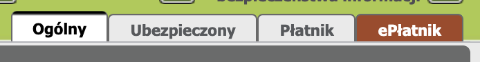
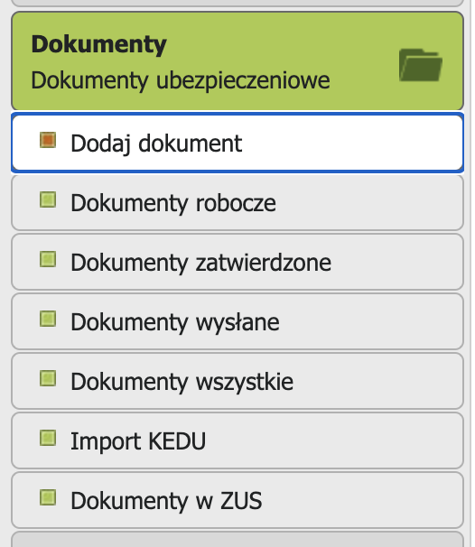
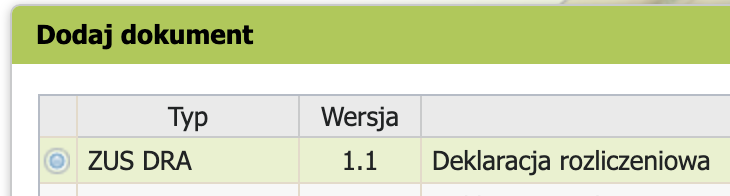
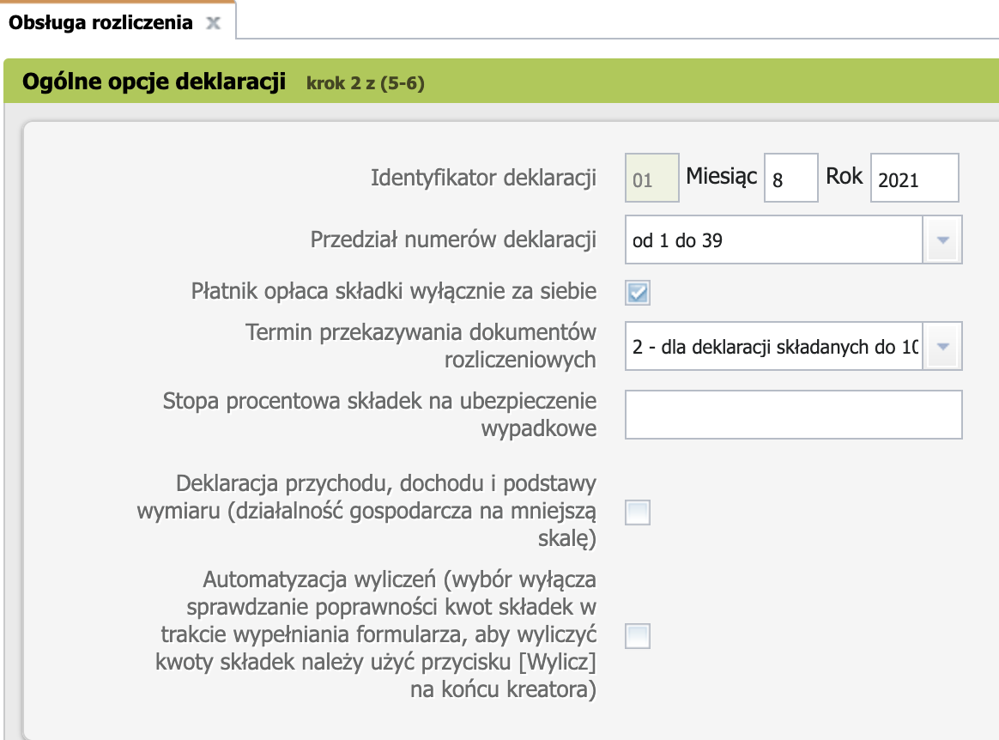
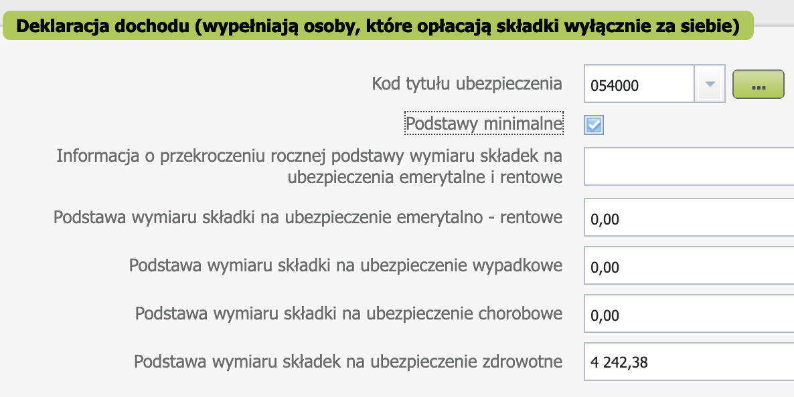
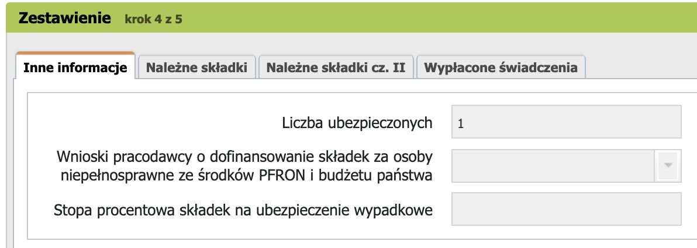

Декларации
ZUS DRA
Как отправить декларацию в ZUS если у вас Ulga na start (инструкция только для тех, у кого действует льгота).
-
Перейти на вкладку ePłatnik.

-
В меню Dokumenty выбрать пункт Dodaj dokument

-
В открывшемся окне из большого списка деклараций выбрать ZUS DRA и нажать Wybierz -> Przejdz do kreatora.

-
Любуемся своими данными и жмем Dalej.
- Nowy komplet rozliczeniowy -> Dalej.
-
На следующем шаге ставим галочку что мы оплачиваем зус за себя и в выпадаюшем списке выбираем тип декларации 2 - до 10 числа. Остальное оставляем как есть. Соглашаемся с сообщением о том, что мы не указали процентную ставку на ubezpieczenie wypadkowe. Нам это не нужно.

-
Ставим галочку Podstawy minimalne. Страница автоматически подставляет нужную сумму как основу для расчета zus.

-
На следующем экране менять ничего не нужно, даже если в ваш ZUS вписаны члены вашей семьи. Dalej.

-
Теперь можно посмотреть что получилось с помощью кнопки Podgląd. Сумма к выплате указана на второй странице. Убедитесь что она верная.
-
Подписать декларацию профилем зауфаным и отправить с помощью кнопочек Weryfikuj и Wyślij i zakończ.
Найти отправленные декларации можно на странице Dokumenty -> Dokumenty wysłane.